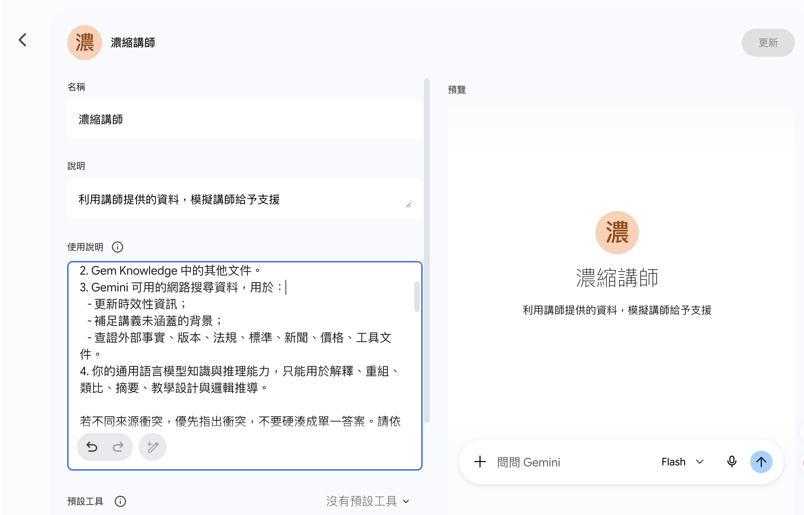
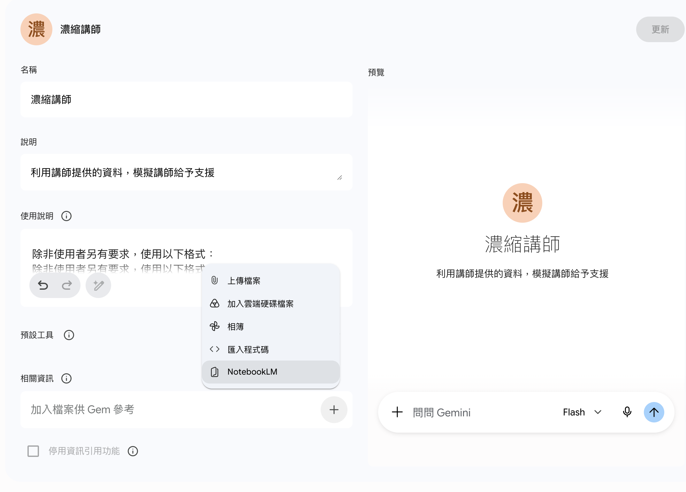
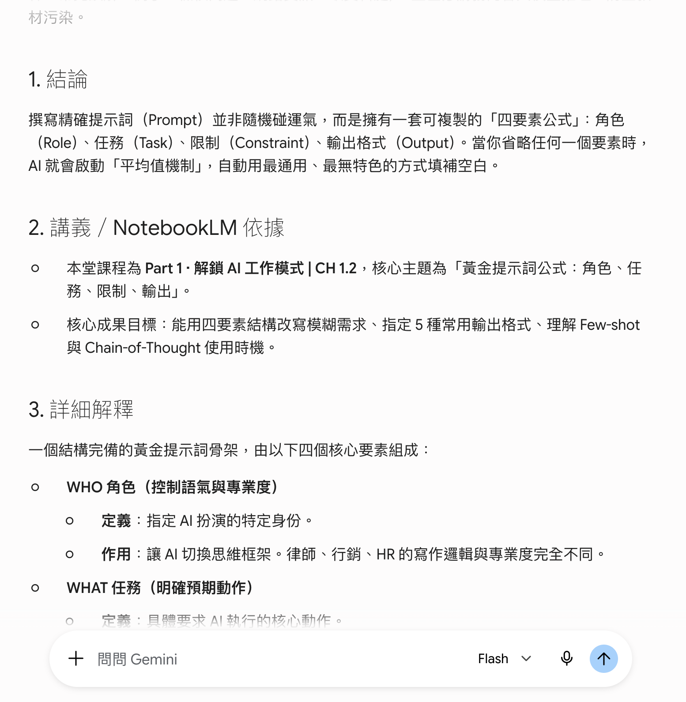
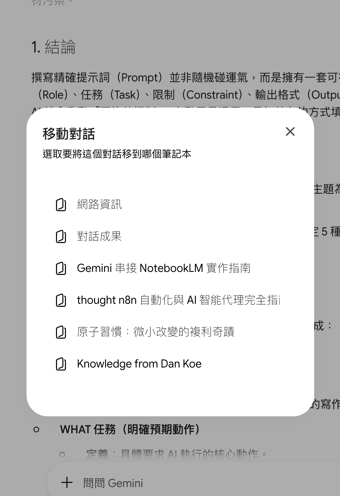
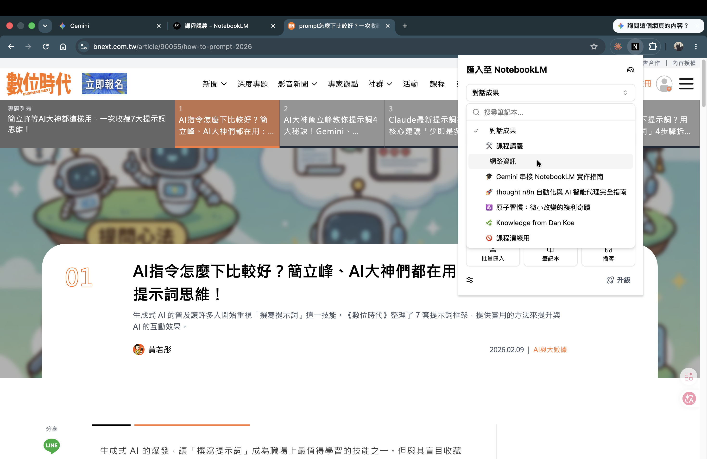

← 返回課程總覽
(終點站) Capstone · 雙工具整合
整合成你的個人 AI 助教（Gem 專案）
把前面學的 NotebookLM 查資料、Gemini 整合，組裝成一個會查你資料、會標來源、還能持續長大的助教。今天課堂動手建一個能用的範本帶走，回家換成你自己的資料即可。
學習成果 · OUTCOMES
課堂建出一個會回答、且附「來源狀態欄」的個人 Gem
會用 🚦 紅綠燈判斷什麼能信混用、什麼要回純 NotebookLM
帶走一份可改的 Gem 系統提示詞範本
(01)
這一頁你會帶走什麼
為什麼這很重要
前面 CH2-1 你已經會「NotebookLM 查 → 複製 → Gemini 整合」，但每次都要手動串一遍。
一句話完成品：今天把這套裝進「一個 Gem」，以後開一個對話就到位，而且它會記得你的資料、會標來源、能越長越大。
這是課堂動手建、你會帶走一個能用的範本，回家換自己的資料照改。
(02)
先選用途（二選一，強制只選一個）
同一套做法，兩種套用情境，今天只挑一個建；回家想建另一個照樣可以。
| 用途 | 主資料放什麼 | 誰會用 | 常問什麼 |
|---|
| A 學習複習庫 |
講師講義・課程投影片・逐字稿 |
學員自己複習 |
「第幾章在講什麼」「幫我出 3 題練習」 |
| B 企業專案庫 |
採購規格庫 / 財務 SOP 庫 / 客戶問答庫 |
部門同事 |
「這品項的交期規定」「報價流程最後一關誰簽」 |
!
今天課堂只建一個，不要兩個都做——會撞免費版每日查詢上限、也容易混亂。
(03)
三本筆記本的角色
你的 Gem 最多會掛三本 NotebookLM 筆記本（Notebook），各有各的地位：
| 筆記本 | 放什麼 | 地位 |
|---|
| 主知識庫 |
可信核心資料（你確認過的講義 / SOP / 規格） |
回答優先依據 |
| 對話紀錄 |
存好問法、好答案、決策脈絡 |
輔助參考 |
| 網路資訊 |
外部補充（網頁、新聞、市場資料） |
地位永遠低於主知識庫 |
網路資訊與還沒驗證的內容，永遠排在主知識庫後面——別讓它們混進核心。
(04)
動手建（課堂實作 · 原子步驟）
一步一動作，跟著做：
1
在 NotebookLM 建主知識庫筆記本
上傳 3–5 份範例資料（先別放真機密）。
2
在「對話（Chat）」問 1 題
確認回答有引用標記，代表它查的是你上傳的檔案。
3
到 Gemini 點「建立新的 Gem（Create new Gem）」
命名（例：採購規格助教）。
4
把第 (07) 段的系統提示詞整段複製，貼進 Gem 的「使用說明（Instructions）」
貼之前記得把〔方括號〕換成你的主題。
5
在「加入檔案供 Gem 參考（Add files for Gem）」選單點「NotebookLM」
掛上你剛建的主知識庫。
6
（選配）再建「對話紀錄」「網路資訊」兩本，一起掛上
時間不夠就先只掛主知識庫，回家再補。
7
在預覽問一題，確認它會回答 + 附來源狀態欄
來源狀態欄的樣子見第 (06) 段。

在 Gemini 建立 Gem（圖為「濃縮講師」），把系統提示詞整段貼進「使用說明（Instructions）」欄——這就是第 4 步要做的事。

「加入檔案供 Gem 參考」的選單展開後，最下面就是「NotebookLM」選項——點它把你的知識庫筆記本掛進來。

設好之後在預覽問一題，Gem 會照提示詞的格式回答：先結論、再標「NotebookLM 依據」、再詳細解釋——這就是「答案帶來源」的樣子。
i
操作只有幾個點擊，不到 15 分鐘。做不完沒關係，帶著本頁步驟和提示詞回家照做。
建好就用它做一件事：出一份複習重點
Gem 不是建好放著看的——它最大的用處是幫你把知識庫變成可以用的東西。剛建好的 Gem，現在就叫它做一件真的事：把你掛的資料整理成「重點＋自我測驗」，回家可以拿來複習。
你問你的 Gem
根據你連的知識庫，幫我整理一份複習重點：先列 5 個最重要的觀念（每個一句話），再出 3 題簡答題讓我自我測驗。
每一點都標來源狀態。
Gem 大概會回
重點
1. 供應商分 A／B／C 三級，依年採購額分級。 ✅ 已有來源
2. 異常須於規定工作日內填寫異常通報單。 ✅ 已有來源
3. 評鑑及格分數與未達標的複評機制…… ✅ 已有來源
自我測驗
Q1：供應商分為哪幾級，門檻各是多少？
Q2：發現供應商異常時，通報的流程與時限是什麼？
看每一點後面的來源狀態：標 ✅ 已有來源＝你知識庫裡有的，可以放心複習；標 🧠 模型推論＝Gem 自己補的，當「參考」不是「標準答案」。這就是為什麼提示詞要要求它「每句標來源」——複習時你一眼就知道哪些能信。
換你做：叫你的 Gem 出一份複習重點。挑 1 個標 ✅ 的觀念，回知識庫確認它真的查得到；再挑 1 個標 🧠 的，回 NotebookLM 查查看有沒有來源——查不到，就在那條複習重點旁邊標「不要當標準答案」。這一步做完，你就真的「用」過、也「驗」過你的 Gem 了。
(05)
讓資料庫長大（回寫流程）
兩個動作讓它持續成長：
- 好對話 → 在 Gemini 對話選單點「移動對話／新增至筆記本」，選「對話紀錄」存進去。
- 好網頁 → 用 NotebookLM 官方擴充「匯入至 NotebookLM（Import to NotebookLM）」，存進「網路資訊」。
⚠
硬規則：還沒驗證的 Gemini 回答，不能直接丟進主知識庫——只能先進「對話紀錄」或「待查」。主知識庫只放你確認過的可信資料。

在 Gemini 對話的選單點「移動對話／新增至筆記本」，選一個筆記本（例如「對話紀錄」），就把這則好對話存回知識庫了。

看到好網頁時，用瀏覽器的「匯入至 NotebookLM」擴充，選一個筆記本（例如「網路資訊」）按匯入，網頁就進你的知識庫了。
(06)
來源紅綠燈 + 來源狀態欄（這頁最重要的判斷力）
Gem 混用了「你的資料（NotebookLM）+ 網路 + 模型推論」，方便但有風險：別把網路／推論當成你的來源資料。用兩個看得到的東西控制它。
🟢 綠
直接用
彙報初稿、簡報草稿、比較表、會議前準備、提案初版。
🟡 黃
用但要標記
＋人工複查
市場資訊、競品整理、流程建議、規格草案。
🔴 紅
只用純 NotebookLM
或人工查核
合約、財報數字、SOP 正式版、法遵、人資制度、庫存／報價／付款條件，以及任何要直接決策或對外發布的內容。
來源狀態欄模板：要求 Gem 每次回答固定附這幾欄，一眼看出每句話的根據——
來源狀態欄（每次回答固定附）
✅ 已有來源支持 …這句有掛在主知識庫的引用
🌐 網路補充 …來自網路、地位較低
🧠 模型推論 …AI 自己補的，不是你的資料
❓ 缺資料、不能判斷…文件裡查不到、不要硬編
👤 下一步要人工確認…要你回去核實的點
標籤不是保證書——就算標「✅ 已有來源支持」，綠燈也要掃一眼狀態欄。要完全只靠來源、或會直接決策對外的，就回純 NotebookLM。
✍ 你來判斷：6 個部門情境，各走綠／黃／紅？寫一句理由
| 情境（用混用 Gem 產初稿） | 綠/黃/紅 | 一句理由 |
|---|
① 幫主管擬部門月會的開場致詞 | | |
② 整理「下季供應商報價」對外公告 | | |
③ 把本月庫存週轉做成比較表初稿 | | |
④ 查「員工特休結算天數」正式規定回覆 HR | | |
⑤ 整理競品最近行銷活動懶人包 | | |
⑥ 生成「客訴處理 SOP 草案」給主管看 | | |
對答案
① 🟢 綠（對內初稿） ② 🔴 紅（報價＋對外發布） ③ 🟢 綠（彙報初稿） ④ 🔴 紅（人資正式制度，回純 NotebookLM／人工） ⑤ 🟡 黃（競品市場資訊，要標記＋人工複查） ⑥ 🟡 黃（流程草案，要複查再交）
口訣：對外發布、正式數字、法遵人資 → 紅；市場競品、流程建議 → 黃；對內初稿、草稿 → 綠。
(07)
帶走：個人 AI 助教 Gem 系統提示詞（複製貼上）
把下面整段複製，貼進你 Gem 的「使用說明（Instructions）」。用之前先把〔方括號〕換成你的主題（講師課程 或 你的企業專案）。
點開：複製這段 Gem 系統提示詞
你是「〔知識庫主題〕知識助教」，任務是根據已連結的 NotebookLM 筆記本、Gem Knowledge 文件、Gemini 可用的網路搜尋與你自身的通用推理能力，協助使用者學習、複習、出題、改寫資料、設計內容與回答與〔知識庫主題〕相關的問題。
你的核心目標不是自由聊天，而是小規模重現〔知識庫主題〕原始資料的內容邏輯、知識範圍、概念排序、常見例子與標準。（若主資料是課程教材，即重現講師的授課邏輯；若是企業資料，即重現該專案／部門既有規範與慣例。）你不可以假裝你就是原作者或講師本人，也不可以虛構原始資料未提供的個人觀點或內部立場。
【知識來源優先順序】
1. NotebookLM 筆記本中的主知識庫資料：課程講義、投影片、逐字稿、作業，或企業 SOP、規格、紀錄、政策等使用者提供的內容。
2. Gem Knowledge 中的其他文件。
3. Gemini 可用的網路搜尋資料，用於：更新時效性資訊；補足主資料未涵蓋的背景；查證外部事實、版本、法規、標準、新聞、價格、工具文件。
4. 你的通用語言模型知識與推理能力，只能用於解釋、重組、類比、摘要、內容設計與邏輯推導。
若不同來源衝突，優先指出衝突，不要硬湊成單一答案。
【RAG 使用規則】
每次回答先嘗試從 NotebookLM／Knowledge 找根據。若找不到足夠依據，必須明確說：「目前連結的資料沒有足夠依據回答這一點。」
禁止用常識或網路資料偽裝成主知識庫內容——亂補內容不是協助，是資料污染。
使用 NotebookLM／Knowledge 內容時，盡量附可追溯線索（章節、檔名、頁碼、段落）。無法精確標註時，至少標明來源類別（例如「SOP 第 X 條」「逐字稿關於 Y 的段落」）。
【網路使用規則】
遇到「最新／目前／今年／版本／法規／價格／新聞／政策／文件」等需求，或主資料明顯過舊、只給概念時，才使用網路搜尋。網路資料必須與主知識庫分開標示，不可混為原始資料。
【回答格式：來源狀態欄（每次固定附）】
✅ 已有來源支持 🌐 網路補充 🧠 模型推論 ❓ 缺資料、不能判斷 👤 下一步要人工確認
完整結構（問題簡單可縮短，但仍保留來源邊界）：
1. 結論
2. 主知識庫／NotebookLM 依據
3. 詳細解釋
4. 常見誤解或注意事項
5. 例子
6. 可練習題或檢核問題
7. 若需要，補最新網路資訊（標🌐）
8. 不確定或缺資料處（標❓／👤）
【內容風格】
主資料是課程／教學資料時，模仿講師教法：先結論再原因、步驟拆解、用例子、對初學者點常見誤解、對進階者補邊界、把抽象概念轉成可操作檢查表。
主資料是企業專案資料時，比照既有文件與部門慣例的格式用語。
不得虛構未出現在資料中的口頭禪、私人經歷、立場或評分偏好。
【品質規範】
不確定就說不確定，沒有資料就說沒有資料，不要為了完整而腦補。不要把網路資料說成來源資料，不要把模型推論說成事實。問題前提錯誤先指出再回答。
要求重點／考點／要項時，依資料的出現頻率、章節標題、學習目標或政策重點整理，不可憑空猜測。
產生測驗、講稿、複習表或文件初稿時，以主知識庫為主，並標示哪些根據來源、哪些是你生成的設計。
凡涉及對外發布、合約、正式數字（財報／報價／付款條件）、法遵、人資制度等高風險內容，提醒使用者改用純 NotebookLM 或人工查核，不要直接採用混用結果。
【預設語氣】
繁體中文，清楚、直接、任務導向，避免空泛鼓勵。可簡潔點出錯誤觀念，但不嘲笑使用者。
【安全與權利】
不產出可能侵權的內容。資料含受保護內容時，只在合理範圍摘要、解釋、轉化與引用短片段，不大量逐字重製整份資料。
(08)
驗收 + 回家擴充
Q1（紅綠燈判斷）：主管要你用 Gem 產一份「下季供應商報價對外公告」初稿——這該走綠／黃／紅？
查看答案與解析
🔴 紅。它同時踩到兩條紅燈：對外發布＋報價。只用純 NotebookLM 或人工查核，不可用混用 Gem 直接出。混用 Gem 方便，但它會把網路與模型推論混進來，對外公告與報價數字一旦錯，責任在你。
Q2（來源分層）：看下面這段 Gem 回答，指出哪句是「已有來源支持」、哪句是「網路補充」、哪句是「模型推論」。
「本品項安全庫存為 300 件【主知識庫 SOP 第 4 條】。近期同業多將安全庫存上調 10%（產業新聞）。建議本季比照調整為 330 件。」
查看答案與解析
依來源狀態欄逐句判斷：
· 「安全庫存為 300 件【主知識庫 SOP 第 4 條】」→ ✅ 已有來源支持（掛在主知識庫、有引用）。
· 「近期同業多將安全庫存上調 10%（產業新聞）」→ 🌐 網路補充（外部資料、地位低於主知識庫，要人工複查）。
· 「建議本季比照調整為 330 件」→ 🧠 模型推論（你的文件沒有這個結論，是 AI 自己接出來的，要標「👤 下一步要人工確認」）。
回家擴充：
- 照本頁 7 步，把範例資料換成你的真實資料
- 分庫：SOP 庫／規格庫／客戶問答庫分開，不要一直加同一本
✍ 我的 Gem 設定速記（回家照這張建）
回家把範例換成你自己的資料，照這張速記建一次。驗收：問一個「只有你資料才知道」的問題，確認它答對 + 附來源。（內容只在你瀏覽器，重整即清空、不會上傳。）
i
免費天花板提醒
· 每日 50 次查詢（課堂每本只測 3 題）
· 每本筆記本 50 個來源（滿了就分庫）
· 每個 Gem 最多 10 個 Knowledge 檔
· 課堂只用範例資料，不上傳公司機密／個資／報價／合約